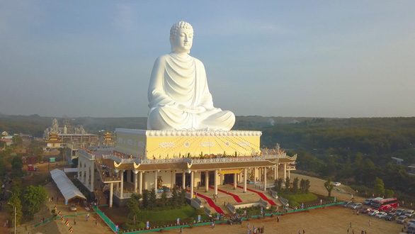
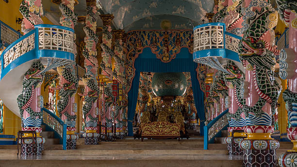
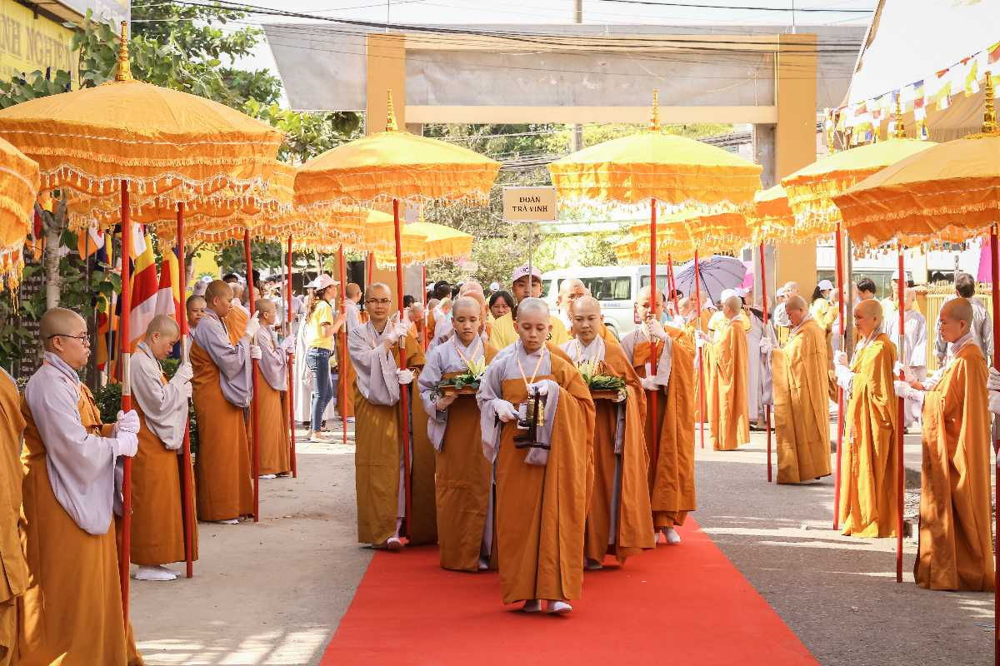

La mayor parte de la población vietnamita, el 63,6%, es creyente. La religión más extendida es el Budismo, con un 49% de personas que lo profesan. Los altares en honor a los antepasados se encuentran en todas las casas; para el vietnamita, los muertos son una presencia activa que interactúan con los vivos. Anualmente, los vivos y los muertos celebran una comunión en un festín durante el Tet. Durante nuestro viaje a Vietnam Oneira conoceremos mucho mejor las inquietudes espirituales de los vietnamitas. El Tet es la celebración del Año Nuevo lunar, la más popular entre los vietnamitas, que fagocita cualquier otra festividad en Vietnam. Esta palabra procede del “tiet”: el nudo de los segmentos de una caña de bambú, con una equivalencia a la noción de transición. La fiesta se mueve entre finales de enero y principios de febrero. Es una fiesta familiar, durante la que se come banh chung, un pastel de arroz pegajoso. Las familias llevan frutas y flores para ahuyentar los malos espíritus. A medianoche, en la víspera del Año Nuevo se elevan plegarias durante la ceremonia de Gia Thua, pidiendo a los antepasados la entrada a sus casas. El dios de la cocina informa al Emperador de Jade, señor supremo del taoísmo y la familia reza para recibir favores. Los mayores regalan a los niños algo de dinero y se suceden las visitas de familiares. El Tet acaba después del tercer día, cuando los antepasados vuelven al reino espiritual. Las creencias vietnamitas se muestran como una amalgama de confucianismo, budismo y taoísmo, unido a un núcleo tradicional de creencias en los espíritus y dioses. |
||
 |
 |
 |
|---|---|---|
Hecho por:Reyes Hernández Leslie Jhoana